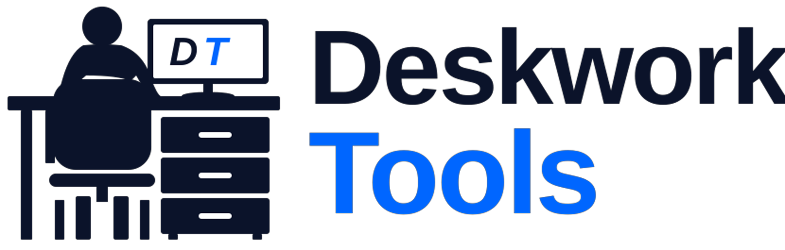
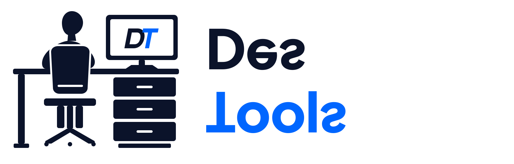
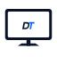
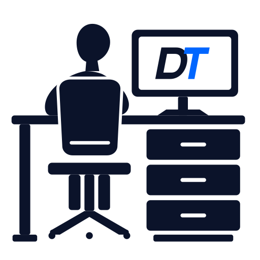

A completely reimagined icon geometry designed from the ground up for modern digital tech and productivity brands. Eliminates the awkward 6-leg visual clutter, replaces clumsy shapes with an ergonomic task chair and purposeful worker posture, and introduces a custom-engineered DT tech monogram.


Tested across standard real-world environments to guarantee that the clean geometry retains crisp legibility without visual vibration:

App icons, browser tabs, social avatars, and compact badges.
Square 512x512 standalone vector for merchandise, documentation, and splash screens.

| Dark Navy |
#0B132A (RGB: 11, 19, 42) — Wordmark "Deskwork", Worker, Chair, Display Frame, DT "D"
|
|---|---|
| Bright Electric Blue |
#0066FF (RGB: 0, 102, 255) — Wordmark "Tools", DT "T"
|
| Display Typography | Plus Jakarta Sans 800 (ExtraBold) — Outlined to pure SVG vector paths |
| DT Monogram | Custom geometric monogram with matched 14px stem thickness & 11° dynamic italic slant |
| Master Dimensions | 1660 × 530 px (3.13:1 horizontal composition) |